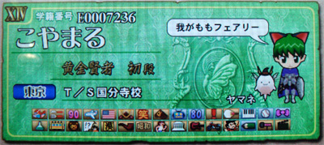
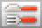
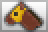
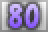
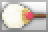
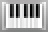
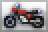
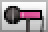

こやまる＠QMA5の成績です。

■成績 階級 ： 黄金賢者初段
獲得魔法石数 ： 38986個 (4893位)
優勝回数 ： 84回 (1653位)
100点満点達成回数 ： 0回 (13411位)
連続正解数 ： 46問 (9456位)
総合正解率 ： 65.08%
平均順位 ： 7.62位
プラチナメダル ： 7枚
ゴールドメダル ： 77枚
シルバーメダル ： 50枚
ブロンズメダル ： 48枚
※2009/3/18 0:00時点
| ノン | アニ | スポ | 芸能 | 雑学 | 学問 | |
|---|---|---|---|---|---|---|
| 平均 | 64.73% | 64.95% | 60.96% | 64.43% | 72.22% | 61.74% |
| ○× | 76.92% | 74.55% | 68.18% | 72.85% | 70.51% | 73.33% |
| 四択 | 64.49% | 69.48% | 62.03% | 61.68% | 78.15% | 65.69% |
| 連想 | 71.17% | 67.23% | 61.08% | 69.44% | 75.95% | 65.35% |
| 並べ替え | 74.79% | 74.05% | 73.54% | 77.32% | 76.99% | 73.92% |
| 四文字言葉 | 63.68% | 61.26% | 62.50% | 67.89% | 73.75% | 61.14% |
| スロット | 70.30% | 66.55% | 64.65% | 74.25% | 70.56% | 59.11% |
| タイピング | 63.33% | 55.04% | 47.69% | 51.02% | 70.56% | 55.60% |
| ビジュアル | 59.26% | 76.42% | 78.31% | 65.50% | 76.77% | 63.49% |
| 線結び | 39.39% | 56.56% | 48.28% | 62.60% | 62.14% | 40.00% |
| 一問多答 | 30.30% | 35.19% | 33.33% | 35.14% | 40.35% | 34.88% |
| 順番当て | 49.28% | 57.63% | 45.00% | 52.17% | 72.41% | 39.13% |
| ランダム１ | 63.49% | 57.29% | 54.63% | 56.67% | 66.67% | 58.67% |
| ランダム２ | 58.62% | 51.04% | 54.17% | 69.05% | 48.81% | |
| ランダム３ | 65.59% | 53.33% | 60.61% | 79.17% | 61.73% | |
| ランダム４ | 54.44% | 61.90% | 60.00% | 60.00% | 55.56% | |
| ランダム５ | 79.49% | 45.45% | 47.62% | 75.00% | 57.14% |
■検定試験
| コナミ検定 | Ｓ | 2845点(8934/22082?位) | |
|  | フード検定 | Ｓ | 2631点(6846/209625位) |
| 90年代検定 | Ｓ | 2631点(8290/240871位) 2631点(4317/5849位) |
|
| 海外旅行検定 | Ｓ | 3459点(799/135499位) | |
| アメリカ検定 | Ｓ | 2947点(828/90963位) | |
| 戦国時代検定 | Ｓ | 3129点(3229/16589?位) | |
| お笑い検定 | Ｓ | 2750点(6928/211220位) | |
|  | 競馬検定 | Ｓ | 3498点(4491/88292位) 3498点(2522/7021位) |
| ロボットアニメ検定 | Ａ | 1757点(38350/177728位) | |
|  | 80年代検定 | Ａ | 1583点(11198/97820位) |
| メタルギア検定 | Ｓ | 3149点(2805/12545?位) 3149点(1784/4970位) |
|
|  | 三国志検定 | Ｓ | 2940点(9216/133411位) |
|  | クラシック検定 | Ａ | 1888点(4291/71115位) |
| 高校野球検定 | Ａ | 1923点(5238/69480位) | |
| アイドル検定 | Ａ | 1672点(10970/93967位) | |
| 理科学検定 | Ｓ | 3535点(2017/9629?位) | |
| トレイン検定 | Ｓ | 3760点(1056/50564位) 3760点(807/3495位) |
|
| アニマル検定 | Ｓ | 3518点(801/100072位) | |
| 少年漫画検定 | Ｓ | 2610点(7784/142272位) | |
| 漢字検定 | Ｓ | 3112点(3379/140684位) 3112点(2659/5815位) |
|
| ミステリー＆サスペンス検定 | Ｓ | 3451点(334/4865?位) 3451点(279/1123位) |
|
| 昭和検定 | Ｓ | 2814点(1159/63354位) 2814点(995/1777位) |
|
| 五輪検定 | Ｓ | 2782点(650/31259位) | |
| 世界遺産検定 | Ｓ | 3344点(497/39302位) 3344点(440/1138位) |
|
| ROCK検定 | Ｓ | 3031点(761/48156位) 3031点(634/1499位) |
|
|  | モータースポーツ検定 | Ｓ | 3172点(673/3446?位) 3172点(554/1387位) |
| 江戸時代検定 | Ｓ | 3370点(450/39402位) 3370点(421/1292位) |
|
| 国語力検定 | Ａ | 2141点(3005/72416位) | |
|  | アニメソング検定 | Ｓ | 2848点(3447/103258位) 2599点(4708/5580位) |
| ハリウッド映画検定 | Ｓ | 2699点(1092/36564位) 2699点(927/1435位) |
※点数(自分の順位/全体数)
※太字は公式ランキング掲載時の点数と順位
※2009/3/17 22:00時点
優勝系の昇格試験（賢者試験、黄金試験）には苦労しました。
後半から検定試験を集中的に勉強して、勉強の成果がトーナメントにも
現れるようになりました。クイズの攻略はやはり勉強が基本ですね。
QMA6でもがんばります。
(2009/3/18)